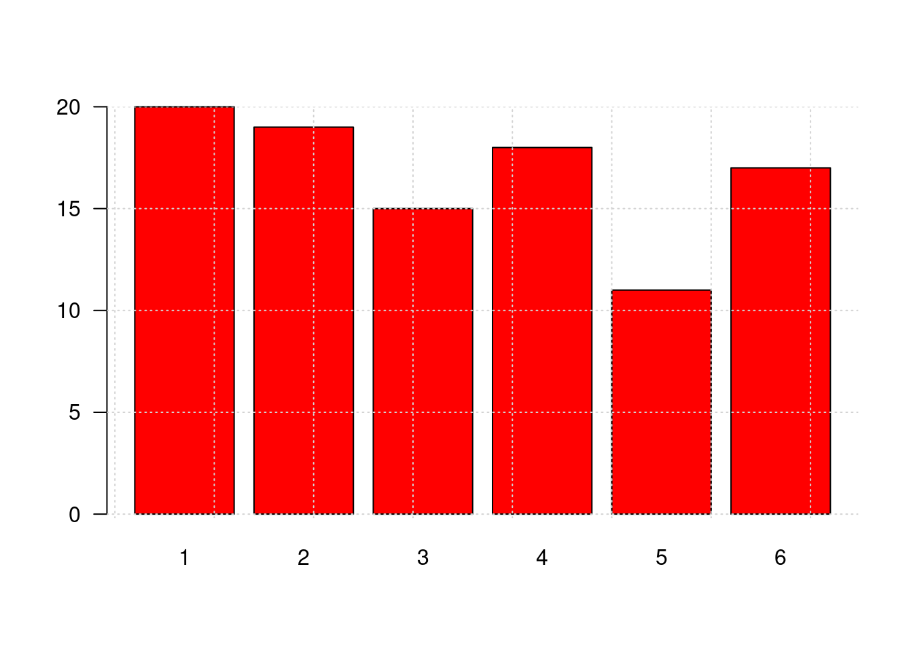
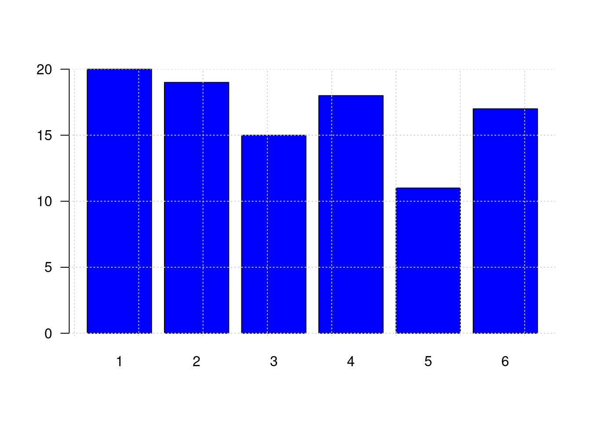

Introducción a R
dgonzalez

Que es R
Es un lenguaje para la computación estadística, utilizado para el procesamiento de información y generación de modelos estadísticos. Entre las principales caractarísticas estan:
Licencia (GNU GPL) abierta y gratis
Creciente popularidad en ciencia de datos
Multipalataforma (UNIX, Windows, MacOS)
Ross Ihaka y Robert Gentieman (U.Auckland - Nueva Zelanda) 1993
Lenguaje multiparadigma
Codigo construido en C y Fortran
Gran comunidad muy activa
Mas de 7000 paquetes

En el siguiente enlace se pueden obtener los archivos para su instalación : https://www.r-project.org/
Podemos usar este lenguaje utilizando una terminal o mediante la IDE RStudio, la cual integra un conjunto de herramientas que facilitan el uso R a los usuarios

Esta interfaz esta conformada por varias ventana como se muestra en la siguiente imagen

- Fuente (Source) : Ventana donde se trabajan los script con código que se guardan para posterior utilización
- Consola (Console) : Ventana donde se pueden escribir comandos de manera directa
- Ambiente (Environment) : Ventana donde se pueden observar las varables y objetos creados
- Archivos (Files) : Ventana que muestra el directorio y los archivos en el que estamos trabajando
- Graficos (plots) : Ventana que presenta los gráficos construidos
- Paquetes (Packages) : Ventana que permite instalar los paquetes requeridos
- Ayudas (Help) : Ventana en la que podemos pedir ayuda sobre las sintaxis de funciones
En los siguientes enlaces se pueden descargar los programas :
Bilbiografia recomendada:
A continuación se relacionan algunas ayudas para la iniciación del lenguaje
Tipos de datos en R
vector
Arreglo unidimensional de valores, caracteres o cadenas
x=c(1,2,3,4,5) #<<
x## [1] 1 2 3 4 5y=c("Muy regular", "Regular", "Bueno", "Muy bueno", "Excelente")
y## [1] "Muy regular" "Regular" "Bueno" "Muy bueno" "Excelente"matriz
Arreglo bidimensional de valores
x=1:9
m=matrix(x,nrow=3) #<<
m## [,1] [,2] [,3]
## [1,] 1 4 7
## [2,] 2 5 8
## [3,] 3 6 9arrays
Arreglos multimensionales de valores. En el siguiente ejemplo se representa un arreglo de 3 matrices 3x3 que conformarian en 3D un cubo de datos
x=1:9
y=10:18
z=19:27
mn=array(c(x,y),dim=c(3,3,3)) #<<
mn## , , 1
##
## [,1] [,2] [,3]
## [1,] 1 4 7
## [2,] 2 5 8
## [3,] 3 6 9
##
## , , 2
##
## [,1] [,2] [,3]
## [1,] 10 13 16
## [2,] 11 14 17
## [3,] 12 15 18
##
## , , 3
##
## [,1] [,2] [,3]
## [1,] 1 4 7
## [2,] 2 5 8
## [3,] 3 6 9factores
Vector de variables categóricas, por lo general se utilizan para dividir una base en subgrupos
x=c("rojo", "verde", "azul")
y=rep(x, times=4)
x## [1] "rojo" "verde" "azul"y## [1] "rojo" "verde" "azul" "rojo" "verde" "azul" "rojo" "verde" "azul" "rojo" "verde" "azul"listas
Colección de objetos cada uno de tipos diferentes. El objeto de esta clase guarda valores en diferentes formatos.
En el siguiente ejemplo se construye un objeto h que contiene varios elementos dentro de si, todos relacionados con un histograma
h=hist(rnorm(100,25,10)) #<<
h$breaks
h$counts
h$density
h$mids
h$xname
h$equidistdata.frames
Estructura de datos de dos dimensiones - filas y columnas - base de datos. En este caso se puede obtener un fila (data[1,] o una columna (data[,1], por separado o un elemento de la data directamente data[20,2].
data(iris) #<<
head(iris)
iris[1,]
iris[1,5]funciones
Para construir una función utilizamos la palabra function, entre parentesis los valores de entrada y entre corchetes la formula que conforma la función. Por ejemplo:
\[f(x)=\dfrac{1}{(x-1)^{2}} \]
fx=function(x){1/(x-1)^2} #<<
fx(100) # funcion evaluada en x=100## [1] 0.0001020304En este caso la función es evaluada dentro de un otra función en la construcción de un gráfico
x=seq(from=2,to=10, by=0.01) # genera secuencia de numeros entre 2 y 10 con paso 0.01
plot(x, fx(x), type="l", col="red") # genera graficaEl siguiente ejemplo construye una función para la realización de un gráfico. En este caso los valores de entrada estan conformados por un vector de datos y un color
y=sample(1:6,100, replace = T) # generacion de datos
# funcion definida para la construccion de graficos
grafica=function(x,color){
barplot(x,
col=color, las=1)
grid()
}
z=table(y) # generacion de tabla de datos
grafica(z,"red") # evalua la funcion en los datos z y colo rojo
w=round(prop.table(z)*100,2) # genera datos y constuye tabla en porcentaje
grafica(w,"blue") # evalua la funcion con w y color azul
ts
Objeto para series de tiempo
Operadores en R
| Aritméticos | Comparativos | Lógicos | |||
|---|---|---|---|---|---|
| + | adición | < | menor que | !x | NO lógico |
| - | substracción | > | mayor que | x & y | Y lógico |
| * | multiplicación | <= | menor o igual que | x | y |
| / | división | >= | mayor o igual que | x or y | O exclusivo |
| ^ | potencia | == | igual | ||
| %% | módulo | != | diferente de | ||
| %/% | división enteros |
Instalación de paquetes en R
El lenguaje R esta conformado por miles de paquetes o Packages construidos por investigadores en diversos temas y área del conocimiento
Al instalar inicialmente R contiene una serie de funciones listas para ser utiliadas las que llamamos -base con el que R funciona de manera adecuada para dar respuesta a problemas básicos, sin embargo en algunos casos es necesario instalar paquetes adicionales, los cuales iremos anunciando en la medida que sean necesario.
Para instalar un paquete lo podemos hacer de dos formas :
- Utilizando la vengtana Packages ubicada en la parte inferior derecha de RStudio
- Digitando en la consola la función install.packages ()
install.packages("ggplot2")